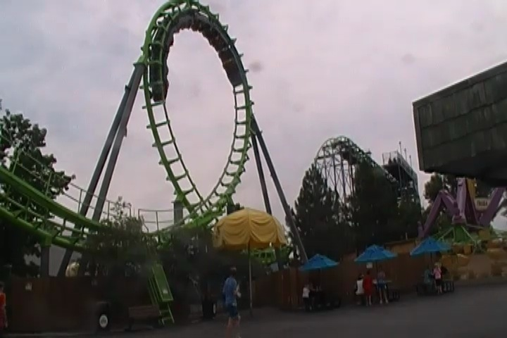
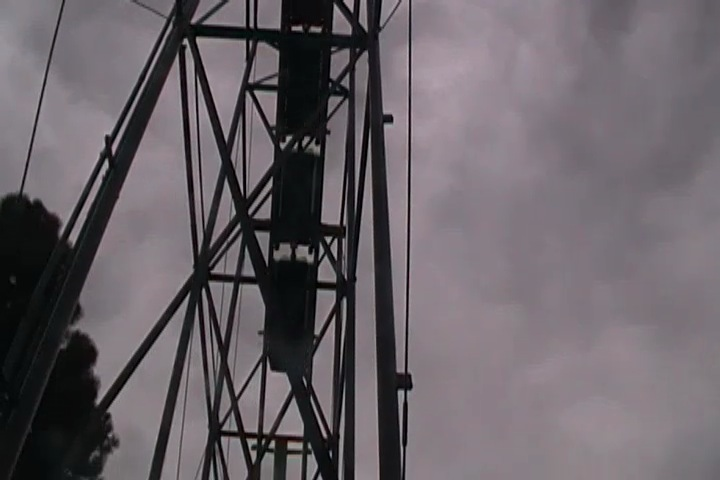
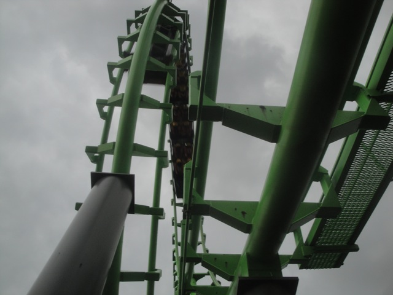
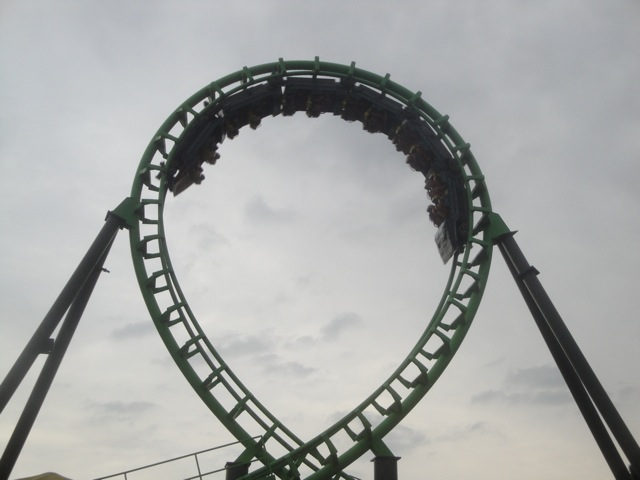
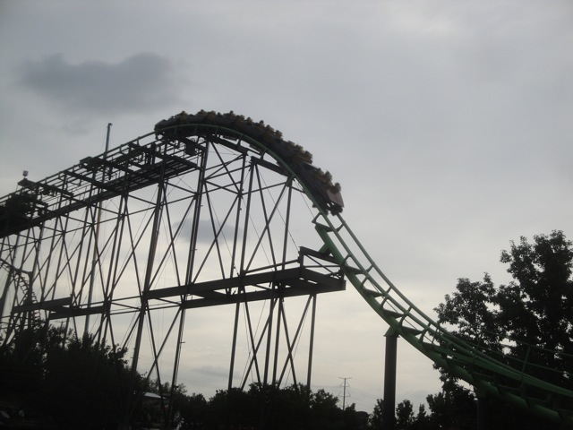

| |
Sidewinder Review

Today at Elitch Gardens, we're going to be reviewing Sidewinder, which is an Arrow Shuttle Loop. It certainly doesn't look like anything special, but it's actually a really rare and unique ride since there are only 3 Arrow Shuttle Loops in the world. Now you may think that it's for a good reason. And while they're not as good as the Schwarzkoph Shuttle Loops, they're actually really fun rides. I like these Arrow Shuttle Loops. Once you climb up the huge flight of stairs (WARNING, you have to exercise to ride this ride. There are no elevators. Fatasses beware), get in the seat, you pull down the OTSR, and we're off. We go through this small little launch. It's pretty weak and honestly, my least favorite launch ever. It almost doesn't feel like a launch. It sort of just feels like its just normally heading out of the station, except it's faster than normal for some reason. So yeah. A little bit of straight track, and BAM!!! Head down the drop. We get a nice little pop of airtime, and a lot of speed. Now the ride is actually fun. And then we go into the loop. It's nothing really special. But hey, it's fairly forceful. It's a lot of fun. We then rise up into this big hill, and lose most of our speed and just go around this straight track that leads to nowhere. We're on the straight track to nowhere. But don't worry. We stop at the edge. And then BAM!!! Launch backwards. It's the same lame launch as before, only backwards. I know in the past, this was pretty cool. But now we have many other rides with backwards launches that are stronger. And then BAM!!! Backwards drop. And that pop of airtime backwards, it's just a lot of fun. Love that little pop of airtime. Then there's the backwards loop. It's just a lot of fun. We then rise up that big hill, and just glide into the brake run. And yeah. The Arrow Shuttle Loops are weird rides. But they're also really fun rides. I mean, that backwards pop of airtime is actually pretty cool. And the loops are cool too. Plus with it being a unique coaster and Elitch Gardens not having that great a coaster collection, Sidewinder is definetly something to check out when visiting.
7/10
Location: Elitch Gardens
Opened at Magic Springs in 1980
Moved to Elitch Gardens in 1990
Built by: Arrow
Last Ridden: July 24, 2013
I have ridden this exact same ride at the following parks.
Frontier City
Sidewinder Photos





|